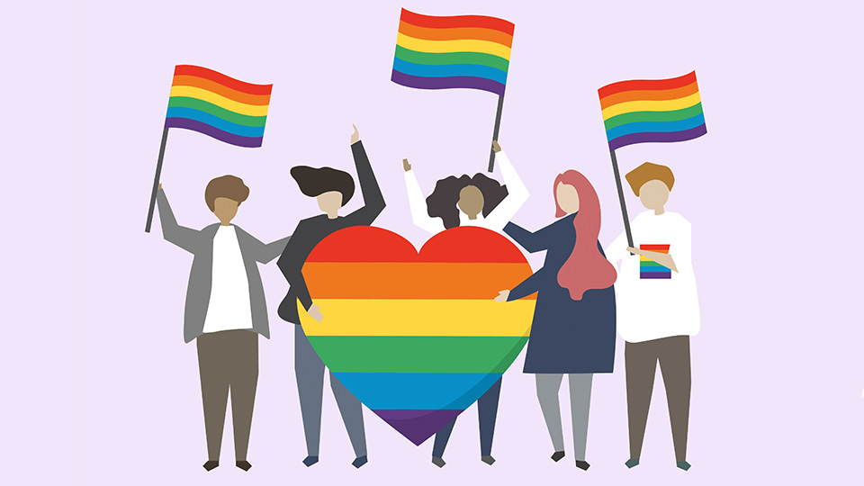
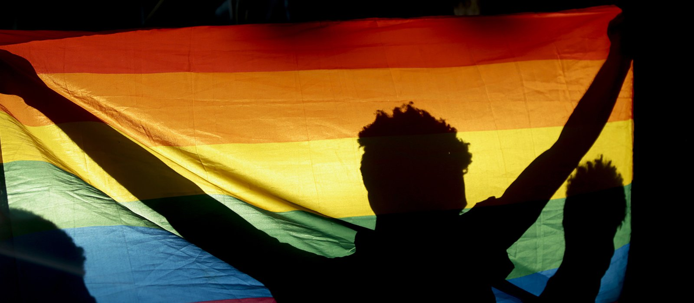
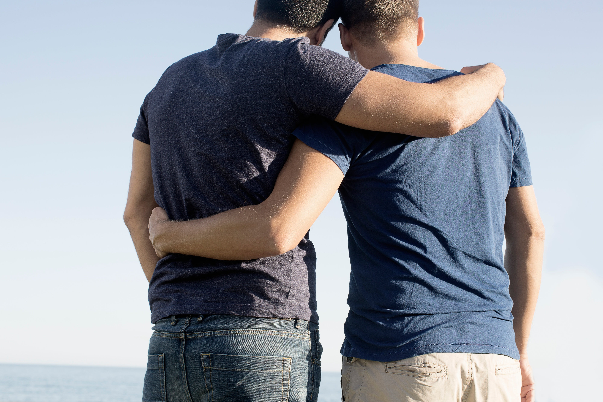

This website is purely for educational purposes and aims to educate the public on homosexuality to
prevent any misconceptions and spread of homophobia.
Thus, do keep an open mind and be mature about the topics that are discussed in this website.
ATTENTION:


ABOUT US
We are a group of students looking to take people to take a deeper look into the topic of
homosexuality.
Through this, we hope that the general public will be able to understand the topic of
homosexuality better and perhaps see it in a new light.
We will cover a few articles that we have conducted research on and we will also be covering the misconceptions associated with homosexuality to provide readers with more insight on the topic.
CASE STUDIES

"Singapore’s Prime Minister Lee Hsien Loong has previously called the law an “uneasy compromise” as society “is not that liberal on these matters”.
There is no mention of gay rights or 377A in the manifesto of his People’s Action Party, which has ruled Singapore since independence in 1965 and is widely-expected to be returned to power, or that of any other party in the election.
Of the four main parties contesting, only the new Progress Singapore Party responded to a request for comment. A spokesman said it did not object to removing criminal punishment for homosexuals but the debate over 377A was a “proxy combat zone” for other issues like family structures and marriage." Penal code 377A being repealed does not seem like a necessity to the main body of Singapore's government and many other governments around the world. However, that does not mean it does not affect many of the minority groups that suffer because of it.
An article from the renowned Broy Lim stated: "While I was on student exchange at the Maryland Institute College of Art, Baltimore, I met artists from various parts of the world. One night I showed them a project featuring my partner, Alvin. My friends asked me, ‘Who is he?’
“‘My boyfriend’, I mustered all the courage in me to utter these two words that I have never told anyone before, despite being in a relationship with Alvin for five or six years. My new friends were nothing but supportive and with that newfound bravery, I worked on my next project: a single staged photograph titled Till the day they know.
“I felt more comfortable with the idea of revealing my truth through photography so I decided to work on and now they know. In Asian families, we rarely talk about our feelings, unlike our Western counterparts. We avoid confrontation and the ‘coming out’ conversations are rare. I knew my family was speculating on my relationship with Alvin and with all my works dealing with homosexual themes. and now they know is my way of putting the speculation to rest.
“The main person I wanted to see this work was my father. I always felt uncomfortable talking to him about such matters for fear of how he would see me. To some extent, my father is a representation of the conservative Asian person. It is with him in mind that my work is quieter, softer, more subtle. Art cannot be created in isolation and perhaps the love for my father has translated to the love for the audience.” A recent study found that LGBT people living in states that had restrictions against same-sex marriage were more likely to have depression and anxiety than LGBT people living in states where this was not the case.
READ
Clearly, there is a lot of stigma against those associated with homosexuality. Whether it be religion, personal standpoints or penal code 377A. Homosexuals definitely do not have it easy, especially when coming out to their friends and loved ones in fear of not being accepted. Many do not understand the concept of homosexuality well. Thus, misconceptions begin to arise and misunderstandings which breeds homophobia when one does not understand the concept well enough. Though it is hard to convince one that is already in the mindset of going against the movement of homosexuality especially when it comes to religious bias, it is not too late to educate one about homosexuality and the common misconceptions related to it. For example, many think that one is simply born as a homosexual. This is in fact, not true. It usually takes a significant amount of time for one to truly realize their sexual orientation. Some others assume being a homosexual is a psychological problem when it is in fact recognized as a normal variant of human sexuality. While some others think that discrimination against homosexuals has little to no effect to one's mental health. When one is shunned by the community surrounding them and the laws in effect in one's specific country are going against them, they are definitely under increased risk of developing mental illnesses because of it compared to those not underneath the immense pressure.